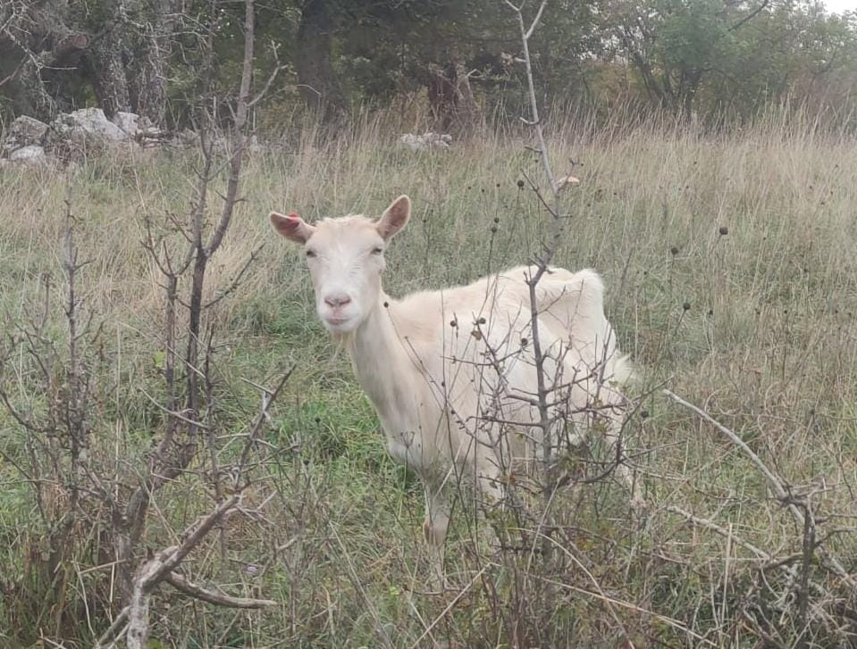

Le capre sono animali affascinanti noti per essere animali sociali che possono essere addestrati a riconoscere il loro nome e a venire quando chiamati. Un altro fatto sorprendente è che le capre hanno un'eccellente coordinazione e sono quindi in grado di sopravvivere in aree precarie come le montagne ripide. Possono persino arrampicarsi sugli alberi e alcune specie possono saltare più di 1.5 metri in altezza.

Gli asini sono creature affascinanti e forti. Se confrontato con un cavallo della stessa taglia, l'asino sarebbe più forte. Hanno una memoria incredibile, in grado di riconoscere aree e altri asini con cui erano stati fino a 25 anni fa. Sono considerati animali molto intelligenti, più indipendenti nel loro pensiero rispetto ai cavalli e in grado di prendere decisioni basate sulla loro sicurezza.